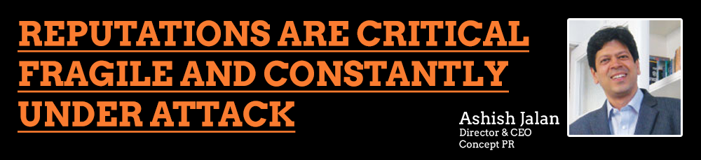

Q. When did Concept ORM as a super specialized arm of PR, take shape?
We saw the growing importance of the online medium and recognized the strength of social media. To be an effective PR agency, it is imperative to tap all communication tools available. Hence the idea of starting ORM, which took shape about a year ago. Though most of our PR clients agreed and understood the need for Online Reputation Management, they were not willing to add the same to their costs. However, with some persuasion, we could manage to get them to sign us on, and once they saw the impact, the relationship was further cemented.
Q. How did your existing client base receive this new vertical?
It was interesting to see that companies with aggressive branding and marketing strategies were pro-active in engaging social media activities whereas other companies were quite hesitant. Once these reluctant companies noticed the value of the important conversations they could participate in and influence, we saw most inhibitions being shed.
Q. Are ORM companies managing to keep their clients above board in this media-led storm?
PR and Brand management have got into super specialization mode. ORM is a critical, specialized function of PR and the current media-led storm has in-fact re-emphasized on the criticality of ORM. It is helping companies keep themselves at par with competition if not above it.
Unlike other media platforms, the online space is available to everyone to comment, which makes it even more difficult to control. The other important factor is that search engines bring up articles written even years ago, making it imperative to have a specialized agency ensuring that a good SEO program will bring forth what the company wants to portray rather than what others have to say.
Q. What does Search Engine Optimization (SEO) mean in today’s overcrowded internet space? Is it enough for an ORM company to have excellent SEO skills, in today’s environment?
Search Engine Optimization (SEO) is the process of making sure that your content is found in the top search results using keywords, categories and links. In today’s environment, it’s not enough for an ORM company to just have excellent SEO skills due to the competitive market. Conversations surrounding the brand are more impactful than any SEO campaign. Many other skills are also needed. These include real time monitoring, in-depth knowledge of various social media platforms and tools, etc.
Q. If SEOs are a hygiene factor why are so many sites dirty?
Well, the most basic elements of SEOs are being ignored consistently. Specific tags are missing and links are kept blank. Many organizations have not realized the power of the online medium, yet. Their online presence is not being managed by professional agencies. This is why so many sites are dirty.
Q. How difficult is it to remove online negative publicity?
This is a very difficult task. That is why it is important to act quickly when any online reputation is threatened. It mostly depends on which site the negative publicity has been put on and who is in charge of it. If the publicity is untrue in nature and damaging, we should be able to get it removed by the moderator, the site owner or the ISP site. It is generally the perfect blend of various organic and social methods which require adequate awareness to be successful in removing or replacing the negative content. If required, there are several unorthodox methods to remove this type of content. These methods should only be used as a last resort for a variety of reasons. A preferred option is to create good online publicity to drive the bad mention down the listings. Our online reputation team can create many diversions such as links, blogs, pages on the site, news releases, and articles posted on different sites. This activity will bury the negative publicity in a much safer way.
Q. Is ORM largely reactive or does it have a critical pro-active role as well?
Each client is different. We have found that an ounce of pro-active activity (prevention) is worth a pound of reactive activity (cure). Ideally, ORM is a pro-active community/brand building exercise which involves a cocktail of real time monitoring, SEO (Search Engine Optimization), SEM (Search Engine Marketing), SMO (Social Media Optimization)and SMM (Social Media Marketing).
Q. Can ORM overshadow the loud and aggressive activity in press and television?
In the short run, the loud and aggressive traditional media will definitely be more impactful. But from a longer term perspective, ORM has the strength to build communities, form opinions that the traditional media will find hard to cope with. Essentially, if there is a specific event or news flow, then the traditional media has the strength and reach to shout out loud, but if it is about building a profile of the company over a six month to a twelve month period, the online mechanism would work better. However, it is important that all the communication platforms work in sync to get the desired result.
Q. In a country as large and varied as India, would you say ORM is equally impactful across cities? How would you manage the difference?
India is the world’s largest democracy and has a free, thriving media in which diversity of expression is encouraged. Even with this incredible diversity, the passions shared by most Indians are relatively common.
When it comes to satisfying their diversity, ORM has a wide range of options to share the same by building communities and groups online. There are these options for the people who share similar interests and background. Social media brings everyone together to share their views and still be a part of the whole. At a macro level, tier one and two cities have been deeply rooted in this trend, while rural India is still catching on. The smartphone revolution will get rural India up to speed within 2 years.
Q. If an offline event has already snowballed online, is it too late for ORM to step in?
No, infact it provides a very good platform for the brand to come forth with “their side of the story” and counter the negative. Infact, since space is not a constraint on the online medium, the facts can be reported in a better way. One can agree with, refute or even simply ignore what is being said based on the company’s evaluation of its importance and influence. Therefore it is necessary to monitor such online activity regularly. ORM in fact, plays a very critical role in crisis management. On several occasions one has seen how social media has created storms or saved the face of companies.
Q. What role does Social Book-marking play in ORM? Would you term it as a high impact tool?
If you find the right platform, Social Book-marking is a highly effective tool. It increases the speed of growth of an article or online resource by a great deal, as it makes it available to a large audience on popular concentrated platforms such as digg, reddit etc. What is most important in the end is the quality of the content. This qualitative ranking decides how far it goes as most of these social platforms are based on recommendations.
Q. Is there a challenging case that you’d like to discuss?
“Immortals of Meluha” is a successful first time novel, due largely to our efforts in synergizing PR vehicles and social media. Many journalists discovered the book on Facebook and engaged the author directly. This led to an organic conversation propelled by traditional PR. When this first time author approached us to help him, he was completely unknown. Now he is known as a leading Indian contemporary author with a growing worldwide readership.
Q. What is the road map you have defined for Concept ORM?
Concept ORM is moving towards becoming a brand itself soon. It currently serves as the fastest growing value added service for Concept PR. We believe that each Concept client and partner needs ORM regardless of its size or type of business.
Our goal is to operate as an independent team by mid 2011, with individual resources for creative, designing, coding etc., with the capability of taking the industry standards beyond the current parameters. In the next 4-5 years, it is likely that Concept ORM will be one of the largest divisions of the Concept Group.
While other organizations are setting up processes to incorporate and develop technology-based solutions, we know that our greatest asset is human talent. By developing this talent, we will spearhead a revolution in the Online Reputation Management industry in the coming years. Successful ORM is not about getting the latest software, it is about developing the right people.